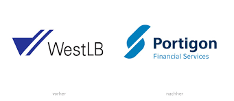

WestLB
- C++ 11
- Solaris 10 unix
- ksh / sh scripting
- Sybase v15
- basic investigation of existing/provided java, perl, python scripts
I worked in the Summit team. Summit is the main trading system of the bank, running on Solaris 10 OS with Sybase v15 database server. Prior to upgrading to v6, Summit was written in C++ and used CORBA for its inter-process communications. They re-designed the system and replaced CORBA with java and activemq - this was to get rid of dependencies on other third party softwares. The back-end remain written in C++.
As a developer in the Summit team, I was responsible for maintaining the existing system, its functionalities, create new features. I also became involved in upgrades to the system, was involved in the project to move the hardware from its London datacenter to datacenters in Frankfurt and Russelsheim in Germany. I also got involved with upgrades to dependent third-party softwares, Solaris and Sybase upgrades. My last project was the upgrade from v5 to v6 where I was the tech lead.